9日目～ブキッ・バリサン・スラタン国立公園～
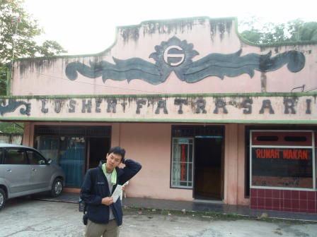
これが僕たちの宿泊したロスメン(安宿)である。3人一緒に一つのベッドを使ったが、疲れていたので全く問題なく眠れた。
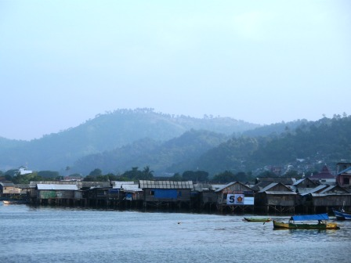
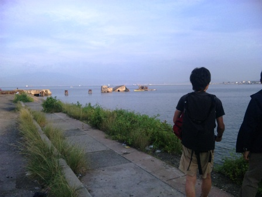
朝の散歩に出かけた。湾がぐるっと一周見渡せた。水際ぎりぎりに住居があるのが驚き。
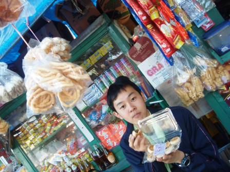
昨晩夕食を食べた屋台で朝食。インスタント麺を作ってくれた。クエ(お菓子)も買ったが、食事代は一人当たり100円以下という驚きの安さ。
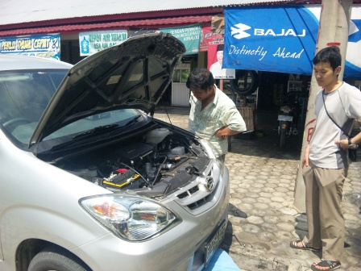
運転手の暴挙は終わらない。なんと、オイル交換の代金まで請求してきたのだ。オイルフィルターまで換えていた。まだ走り始めてから1000kmもないというのに。しかも、僕たちが指定した道路からはかなりそれたところを走っていた。要するに、道を間違えたのである。オイル交換所の店員も交えて話したが、運転手も店員も、地図の見方を知らないようだった。
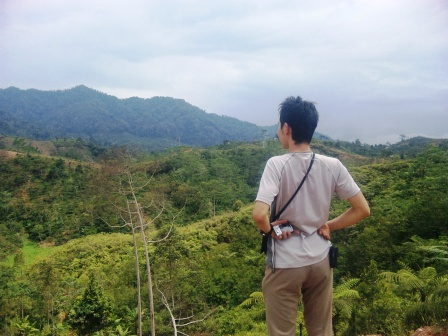
結局、大きく迂回する形で目的の世界遺産、ブキッ・バリサン・スラタン国立公園にたどり着くことができた。日本の森と決定的に違う点は、植物の密度だ。まさに、鬱蒼としたジャングル。力強い生命力を感じた。
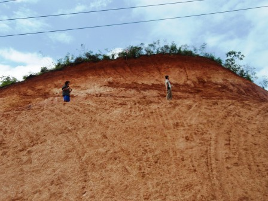
この赤い土はおそらくラトソルだろう。
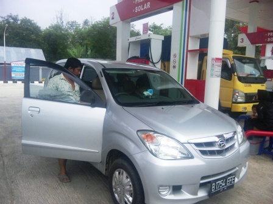
給油中。インドネシアではPertaminaというガソリンスタンドしか見なかった。ガソリンも軽油も同じ価格の45円/L程度。安い！！さすが産油国。スマトラ島でも、プカンバル近郊のミナス油田などでは良質の原油が多く産出されている。
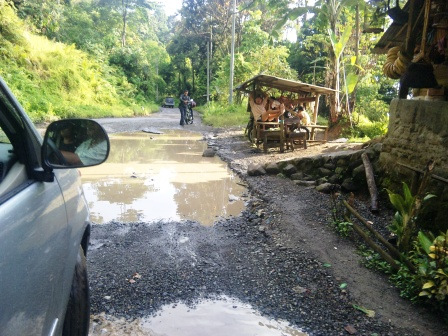
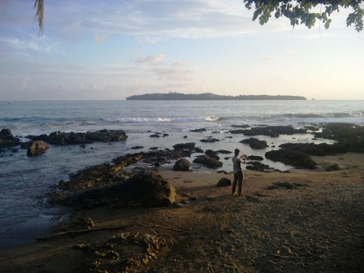
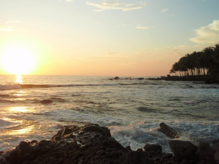
国立公園を貫く道は悪路が続き、平均時速は20km程まで低下してしまった。穴ぼこだらけで安心してスピードを出すことなど不可能だ。密林が近くまで迫っているので見通しはほとんどきかない。走り続け、ようやく南西の海岸に出た。インド洋の波は強く、どうしてかは分からなかったが海水の色が黄色っぽく濁っていた。ただ、悪臭などはなく、浜にもゴミなどは散乱していなかった。夕日が美しかった。
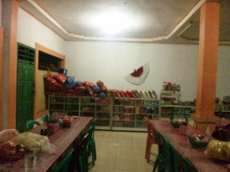
スマトラ島の、しかも国立公園内の道の悪さは完全に僕たちの予想を超えていた。本当は、今日はブンクルまで行きたかったのだが、たどり着くことは不可能だった。誤算だったし、これは僕たちのミスだった。宿に着く前に夕食をとった。バイキング形式の簡素なレストランで、壁には無数のヤモリがうごめいていた。結局、パジャンという町のホテルに着いたのは夜の22時ごろだった。安いホテルだがロスメンと比較すると少し高めの料金だったため、1日の支給額を超えた分については運転手に支給した。お金を手渡した時の運転手の不敵な笑みは今でも忘れられない。